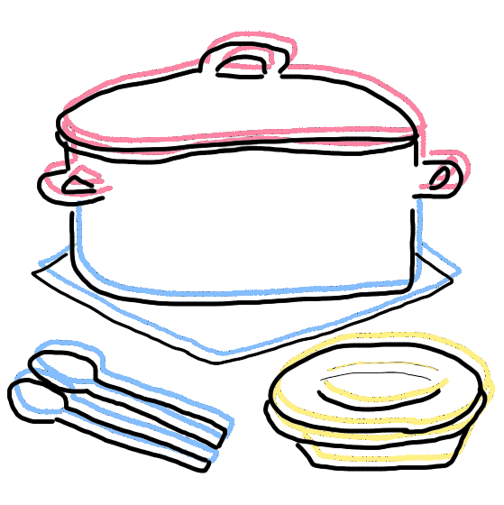

and they were roommates
a zine

Keeping It Neutral
If you don’t interact with someone, you won’t get into conflicts with them, so that’s the philosophy my roommate and I operated on after the first day of getting to know each other. She said she practiced witchcraft and needed the living room to herself each full moon — “For spiritual reasons,” she emphasized. We talked about where we were from. She had ideological qualms with me being from a place where the average house price was over a million dollars. Pointing to my Gucci sandals, she said: “I don’t believe in buying brand name things.”
“These are literally fake,” I said. “I got them from a flea market.”
“You’re nevertheless feeding into the aesthetics of appearing wealthy,” she said, and I realized that I had my own ideological qualms with people who treated life as though it were some English essay to analyze.
After that, beyond the occasional “hi” and “bye,” we stopped talking to each other. Wordlessly we self-designated obligatory domestic tasks: she’d take out the trash, I’d do the dishes; she’d clean the sinks, I’d vacuum the floors. Apartment life proceeded quietly and amicably until the end of the academic year, when I walked into my room to find a piece of trash on my desk.
I take the crystal out into the living room. She stops rearranging stones on the window sill.
“It’s amethyst,” she says. “A thank you gift for being such a good roommate. I know we don’t talk much, but honestly, having a neutral, sane roommate is better than most options out there.”
I look down at the amethyst. The words nearly sear out of my mouth: How crystals are too expensive, that most affordable ones were actually just man-made, and that the market was saturated with fake ones anyways, so the industry’s just deceitful like most other industries. What she was really doing when solar charging her crystals every morning was foolishly feeding into the corrupt jaws of capitalism.
Instead, I swallow my words back. I tell her thank you, she smiles in response, and we each go back into our own rooms. I shut the door, set the amethyst in a drawer: Is this the key to world peace?
artist / Zoie Burt